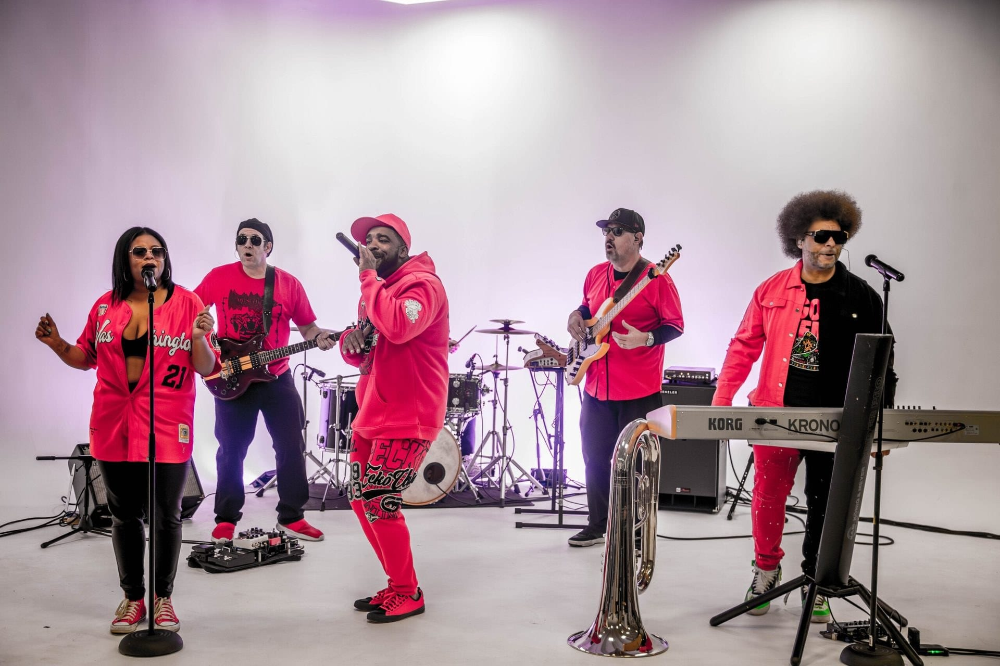
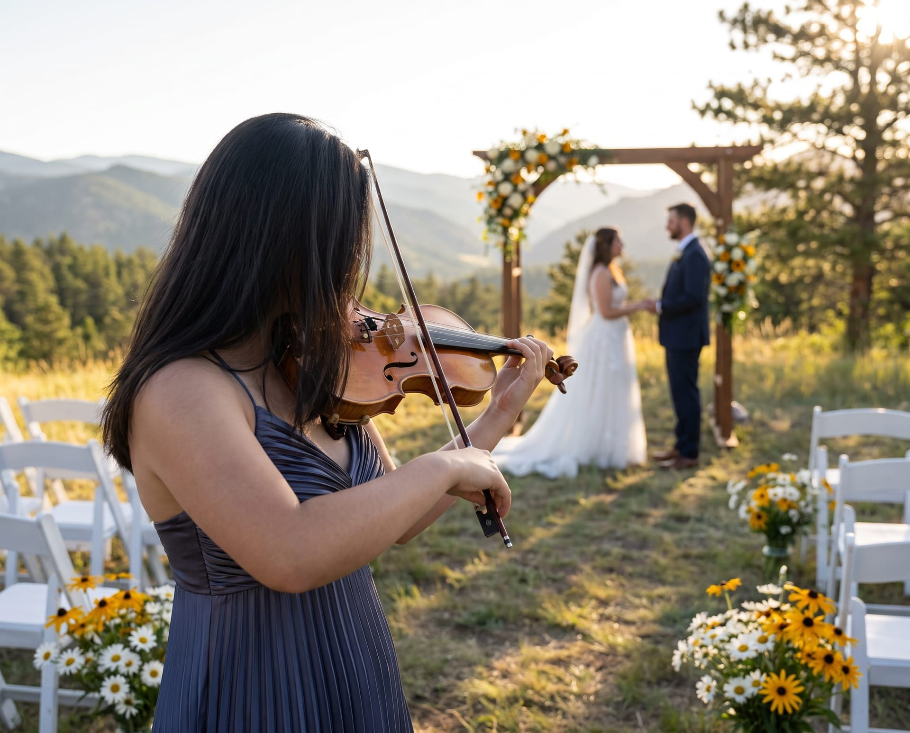

live music Pricing
What live music costs in denver
Here's what live music costs in Denver and the Front Range, how a quote comes together, and what can change the price, so you can set a budget before you write to anybody.
Tell us the date and your plan for the night, and we'll come back quickly with a recommendation and a price.
colorado market rates
These are published 2026 prices for two hours of live music, starting with Denver. They come from market guides and wedding budget surveys.
- A trio to a full band with hornsDenver
$2,500 to $8,000
- A four to six-piece bandDenver
$4,000 to $6,000
- The average budget for a live wedding bandColorado
$2,338 to $2,858
- A cover or jazz band for a corporate eventUnited States
$2,500 to $8,000
- What most couples pay for a wedding bandUnited States
$3,000 to $8,000
- A seven to nine-piece show bandUnited States
$7,500 to $17,000
Live sound makes the biggest difference inside these ranges, since some acts include it and some don't. Insurance and travel can change the price, too.
Signet provides prices for a specific date on request.
What affects the price
Can raise the price
Can lower the price

How signet puts together a live entertainment quote
Most acts in the Denver, Colorado market split their billing into two parts.
- The call-out fee
- A flat fee for coming out to your event, however long the performance runs. It covers the drive, load-in, setup, sound check, strike and load-out.
- Performance time
- A rate for the hours of music itself.
That's why an hour of cocktail music isn't a quarter of the price of a four-hour reception.
Planning a company event? Take a look at what live music costs for a corporate event.
Included for every act
- Your point of contact
- One person who's reachable from your first email to load-out.
- Sound for the venue
- Sound sized for a small-to-medium event venue.
- Load-in to load-out
- Setup, sound check, strike and load-out.
- Timeline coordination
- We'll go over the flow of the event with you beforehand.
- Music between sets
- Continuous audio during set breaks.
- Paperwork
- A certificate of insurance, a W-9 and one itemized invoice.
Quoted separately
- Front Range travel
- Boulder, Colorado Springs and Fort Collins.
- I-70 corridor travel
- Vail, Beaver Creek, Breckenridge and Winter Park.
- Far resort travel
- Aspen, Telluride, Steamboat and Crested Butte, plus a night's lodging.
- Holiday and peak weekends
- New Year's Eve, too.
- Live-band karaoke
- Your guests sing with a live band.
- Learned songs
- A song the band doesn't already play, with four weeks' notice.
- Stage lighting
- Lights for the stage.
- A dedicated sound engineer
- Someone running sound for your whole event.
- Event photos and video
- Add them to any booking, quoted with your music.

Save money: Booking more than one part of the night
Once one of our acts is on site, the drive is made and the sound system is up. Covering the ceremony or the cocktail hour alongside the main booking costs less than booking twice.
How much of the night to cover is your call. If you'd rather bring your own ceremony musician and have us get people out onto the dance floor later, that's a common approach, too!
Tell us the flow of the evening when you send the date and we'll reply with availability and costs - maybe a few questions, too.
Common questions
Here are a few common questions about prices and how Signet bills. For everything else, from player substitutions to volume limits, see the full question list.